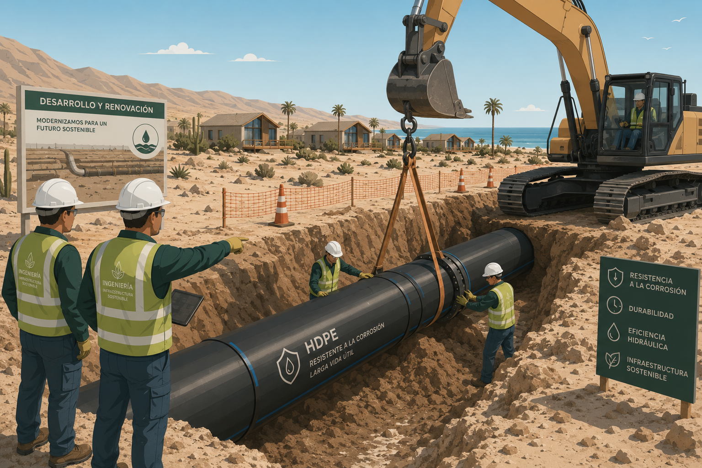

00El Problema

Escasez y Fugas Invisibles
Dependencia extrema de camiones aljibe y graves fugas no visibles. El terreno salino agrava el problema estructural en el complejo.
Planta Desalinizadora · Red HDPE Sectorizada · Macromedidores Inteligentes
Dependencia extrema de camiones aljibe y graves fugas no visibles. El terreno salino agrava el problema estructural en el complejo.

Los equipos renuevan la matriz subterránea utilizando tuberías de Polietileno de Alta Densidad, altamente resistentes a la corrosión.

Se instala la planta desalinizadora de osmosis inversa capaz de generar 35 m³ diarios, eliminando la necesidad de camiones externos.

Implementación de macromedidores digitales y sensores en la red. Todo el complejo se monitorea desde una plataforma centralizada.

El sistema cerrado y finalizado. En la pared de la planta luce el logo oficial del proyecto, garantizando agua limpia y sustentable.

El sistema operativo se encuentra completamente cerrado y asegurado. En sus muros destaca el logo del proyecto, marcando un hito en la sustentabilidad de Playa La Virgen.
Pérdida de presión detectada.
Gravedad:
Aspectos positivos y fortalezas
Puntos a considerar y mitigar
Evolución futura del proyecto